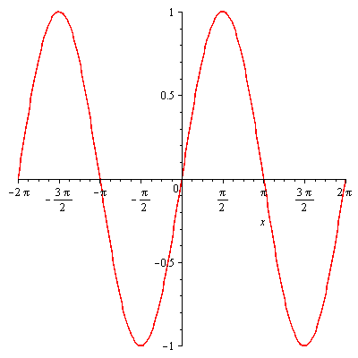
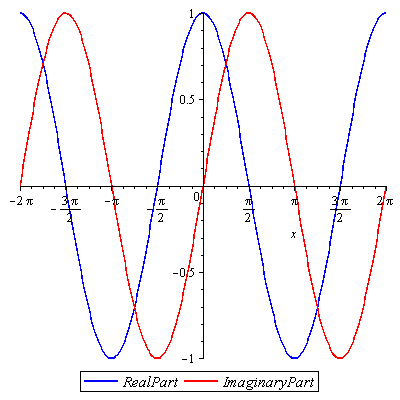
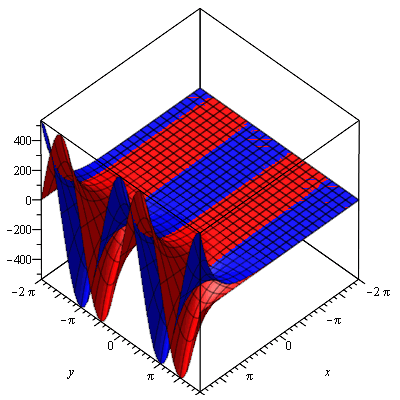
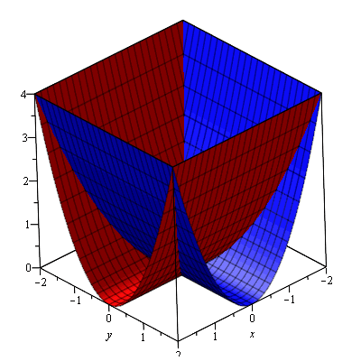
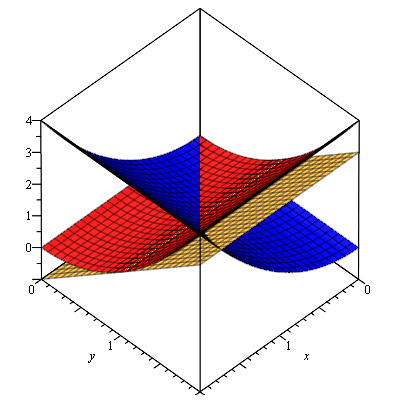

4D graphs
How to visualize complex-to-complex functions
This document outlines a method for visualising four-dimensional complex-to-complex functions in only 3 dimensions. It cannot be generalised to other four-dimensional objects. (For that, check out Miegakure)
These visualisations do not show the true beauty of four-dimensions. However they can be used to:
- give geometrical meaning to differentiability;
- show an immensely deep relationship between trig functions and hyperbolic trig functions;
- give meaning to the 2πi periodicity of the exponential function; and
- clearly show how branch cuts affect the Log function.
An interactive version of this document for Maple can be found here.
Two-Dimensional Analogy
First, we will visualise a real-to-complex functions in 2D.
The real part of f(x) is cos(x) which looks like this:

The imaginary part of f(x) is sin(x) which looks like this:
Now we superimpose both curves on the same axes, using colour to help us remember which is which.
Now we have a 2D graph of a real-to-complex function. To look up f(x) on the graph, imagine a vertical line at x. The line will intersect the red and blue curves exactly once each. The height of the points of intersection of the red and blue curves equals the value of the imaginary and real parts of f(x) respectively.
All 3 Dimensions
Cartesian Graphs
The next step is to add an axis out of the page, which represents ℑ(x) (the imaginary component of x), what is currently the x axis becomes the ℜ(x) axis. (The real component of x.) I will call the vertical axis the z axis.
Let's look at a function similar to the previous example, but with a complex domain (and without the i in the power).
We'll start by plotting the real part as a complex to real function. You can visualise this in the same way as a function of 2 variables in the real world.
Now we plot the imaginary part, which can also be thought of as a complex to real function, or a 2 variable real function.
Now we superimpose both graphs on the same axes.
Maple won't let me add a legend to 3D graphs, so remember, the blue surface is the real component and the red surface is the imaginary component.
To look up g(z) on the graph, imagine a vertical line through (x, y). The line will intersect the red and blue surfaces exactly once each. The height of the points of intersection of the red and blue surfaces equals the value of the imaginary and real parts of g(z) respectively. We can now see geometrically what it means for the exponential function to have a period of 2πi (it has a period of 2π along the y axis).
Polar Graphs
We already know g(z) = exeiy. That is, the function has modulus ex at an angle of y. We can see this more clearly by plotting the argument and modulus instead of ℜ(g(z)) and ℑ(g(z)).

From this graph we see that the argument (green) is independent of x, and increases linearly as y increases (the saw-tooth appearance is because any value above π gets wrapped around back into the − π to π range). We can see that the modulus (orange) is just ex. It is clear from this that visualising complex-to-complex graphs can be insightful. Obviously we still can't see the curve in all its 4D glory, but there is a lot more usefulness to come.
Differentiability
For this section we will stick to Cartesian graphs, because differentiation is intrinsically Cartesian (due to the Cartesian nature of the Cauchy-Riemann equations).
To explain what differentiability means geometrically, here is an example:
If we apply the Cauchy-Riemann equations we get:
and
Therefore h(z) is differentiable only where x = y. Let's see why this is by looking at the graph geometrically. Here is a Cartesian graph of h(z):
Let's pick an arbitrary point on x = y, such as 1 + i.
The tangent plane (gold) to the real surface (blue) at 1 + i looks like:

The tangent plane (gold) to the imaginary surface (red) looks like:
We already know the graph is differentiable at 1 + i.
The first Cauchy-Riemann equation (∂u(x, y))/(∂x) = (∂v(x, y))/(∂y) tells us that the slope of the tangent plane to the real surface in the direction of the positive x axis is equal to the slope of the tangent plane to the imaginary surface in the direction of the positive y axis.
The second Cauchy-Riemann equation (∂u(x, y))/(∂y) = − (∂v(x, y))/(∂x) tells us that the slope of the tangent plane to the real surface in the direction of the positive y axis is equal to the slope of the tangent plane to the imaginary surface in the direction of the negative x axis.
This means that the planes are actually identical, but they are rotated 90o around the z axis relative to each other.
This rotational equality in tangent planes is the geometric meaning of differentiability. It's hard to check whether such rotations are possible at an arbitrary point in your head with visualisations (try checking anywhere on y = − x, make sure you rotate in the correct direction), but at least now you know the geometric meaning of differentiability for complex-to-complex functions.
Logarithms
log
Let's look at logs.
Let's plot this as before. The real part (blue) can be thought of in a Cartesian sense, the imaginary part (red) can be thought of in a polar sense (notice that I have defined the range of θ to be any real number, not just a 2π range).

Notice that every possible vertical line intersects the red surface at more than one point. This is because log is a multi-valued function. Notice that each such intersection is 2π above or below the next. That's because the imaginary part of log is θ + 2kπ for θ ∈ ( − π, π]. Each layer of the red helix corresponds to a different value of k.
We can also see why log(0) is indeterminate (the red surface intersects the line x = y = 0 at every point).
Log
Now let's looks at Log(z).
We need to restrict this helix/spiral thing so that we have a single-valued function. This is known as a 'branch cut'. The following graph shows how different branch cuts affect the Log function. The variable t is the angle of the branch cut, in radians.
Beyond
Now we know how to visualise arbitrary complex-to-complex functions in only 3 dimensions. Let's try some more complicated ones to see what happens.
Polynomials
Here is a complex parabola:
Here is a complex cubic:

Here is a complex square root. (Note: Only the principle value of the square root is shown)

Here is a complex hyperbola:
Trigonometry
Here is cos(z):

Now here is cosh(z):

Notice that they are identical aside from a 90o rotation about the z axis? That's because cos(iz) = cosh(z), and multiplication by i results in a rotation of 90o (rotation in either direction because they are both even functions in the real world). Is your mind blown?
Your Turn
If you want to graph any other functions, first open up Maple, and type in the following code.
ImColour:=red;
ReColour:=blue;
with(plots):
plotIm:=(func,x1,x2,y1,y2)->plot3d(Im(func(x,y)),x=x1..x2, y=y1.. y2, color=ImColour, axes=boxed);
plotRe:=(func,x1,x2,y1,y2)->plot3d(Re(func(x,y)),x=x1..x2, y=y1.. y2, color=ReColour, axes=boxed);
plotComplex:=(func,x1,x2,y1,y2)->display3d({plotIm(func,x1,x2,y1, y2),plotRe(func,x1,x2,y1,y2)});Then type in the following code, and replace <function> with the function you want to graph in terms of x and y (e.g. just “sin(x+I*y)”, no “f(x)”). x1, x2, y1 and y2 are the ranges to be graphed. Replace them with real numbers such that x1 < x2 and y1 < y2. Don't forget that in Maple √( − 1) is written with a capital `I', not a lower case one.
If you want to try a few functions, it is only necessary to retype this last line.
plotComplex((x,y)-><function>,x1,x2,y1,y2);Go have a play. There is a lot to discover.